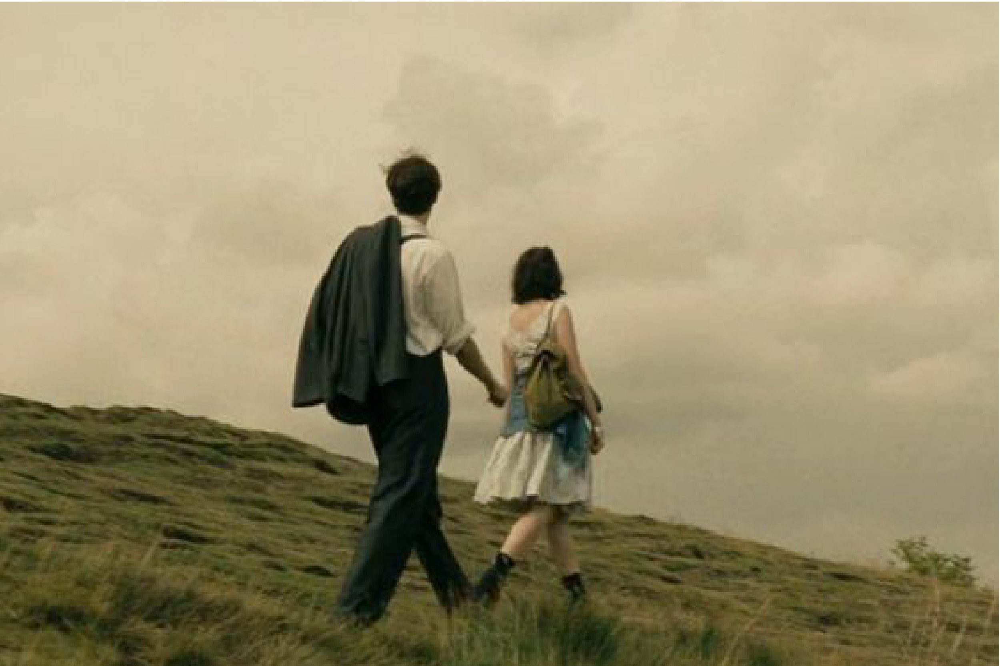
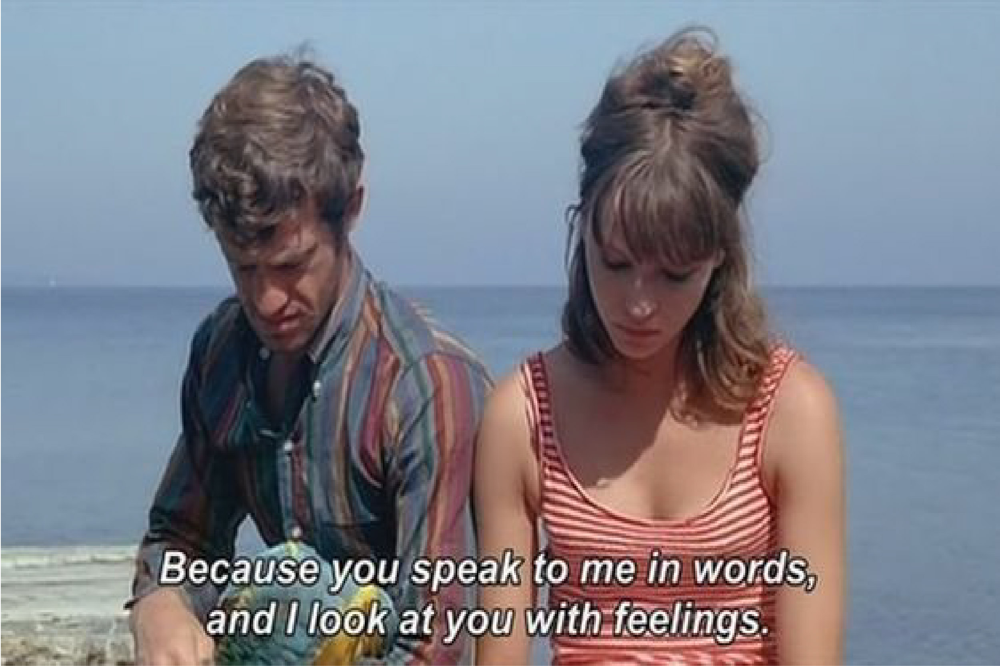
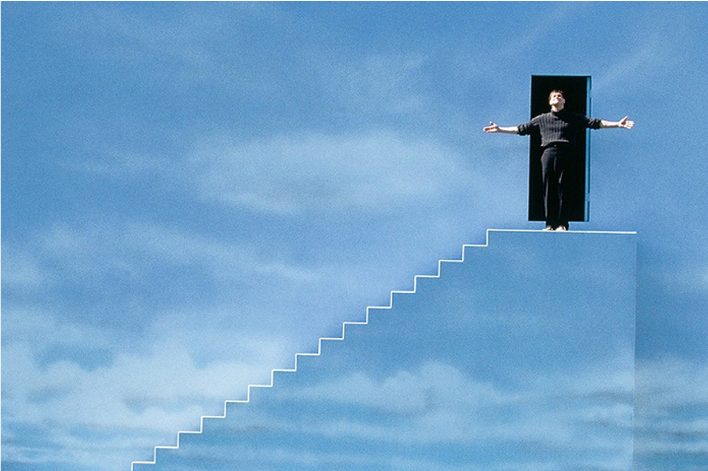
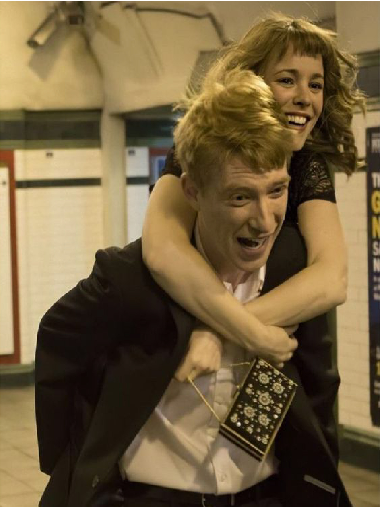
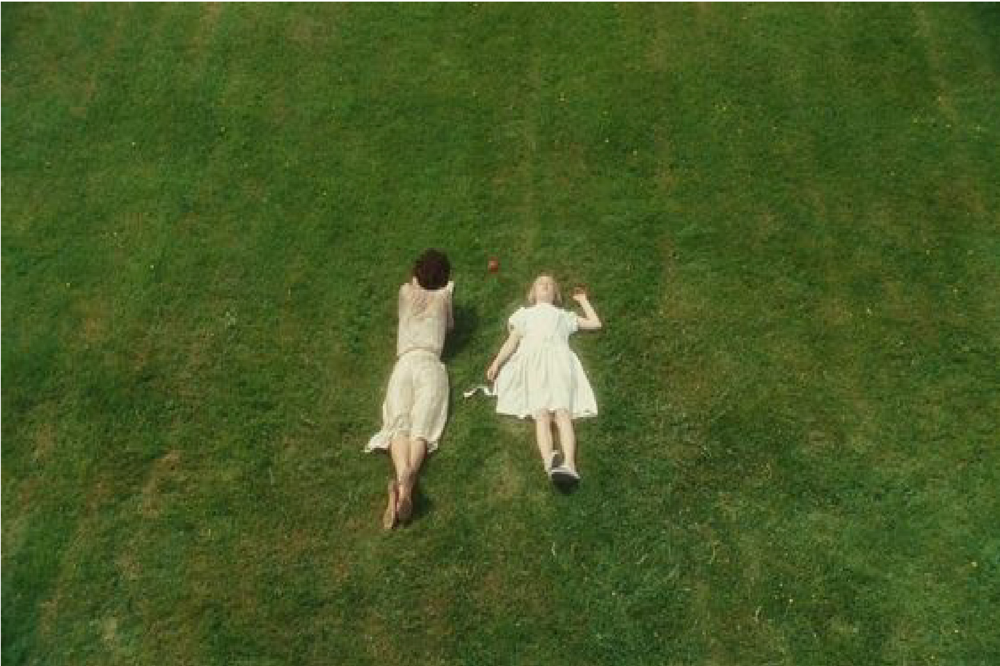

Una colección de recomendaciones de films para tu corazón
Lo que amamos esta semana
La Espuma de los Dias
Basada en la novela de Boris Vian
Ver trailer
High Fidelity
Zoe Kravitz protagoniza el remake del clasico noventero
Ver trailer Quotes & Stills Favoritos




